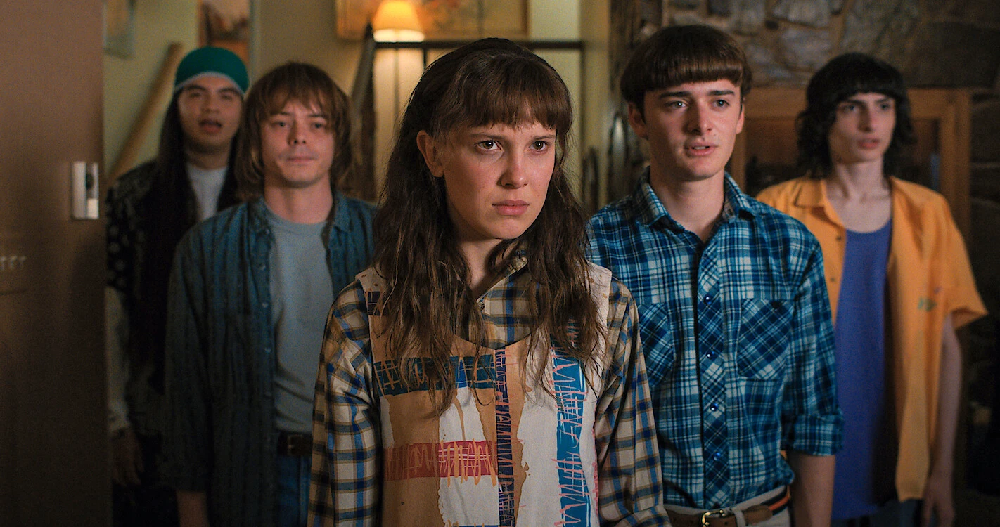

The Mystery of Mr. Clarke
Our beloved science teacher left behind research notes that hold the key to saving Hawkins. A simple text terminal isn't enough; the party needs to visually brief the town sheriff and other allies using animated presentation decks that simplify the multidimensional threats we face.

Mission Brief: The Engine
Build an AI-powered engine that ingests documents and programmatically generates fully formatted, animated presentation decks. The system must intelligently chunk the retrieved data and outline a logical structure with bullet points and visual animations.
Core Project Objectives
-
Ingest and process a local folder of reference documents including PDFs and text.
-

Programmatically generate multi-slide animated presentation decks (HTML/PPTX).
-

Include automated slide transitions and sequential element animations.
Join the AV Club Recruitment
To complete Project Directive 3, the AV Club needs your technical expertise. If you have experience with AI, RAG systems, or programmatic presentation generation, we have a spot for you in the party. Join us to help find Mr. Clarke and stop the signals.